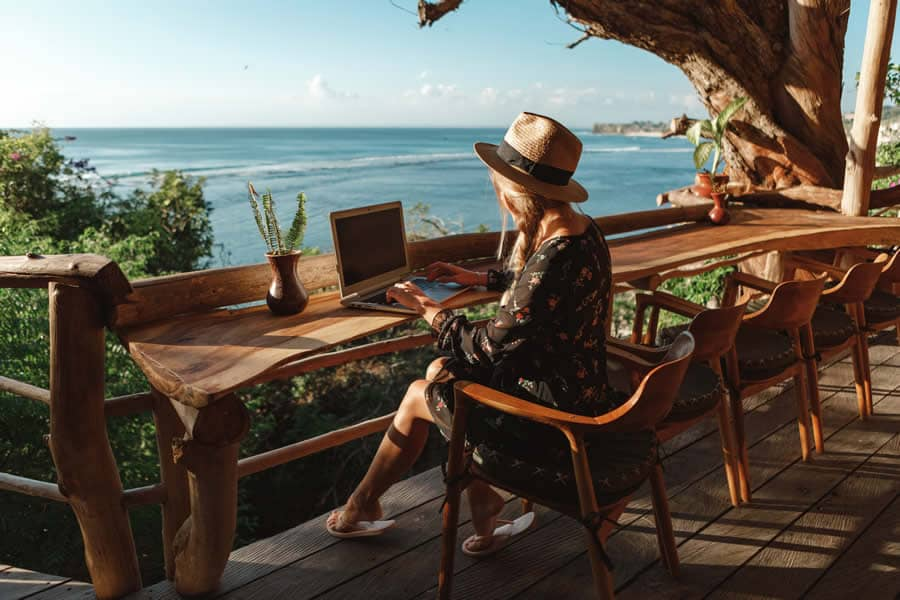
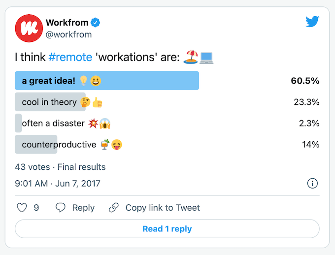
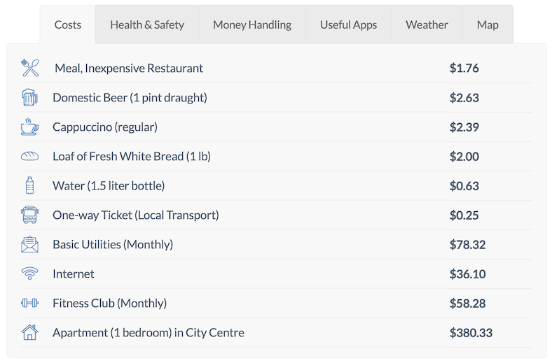

Start
Morning everyone.
Please raise your hands if you’ve ever worked remotely on a caribbean island.
Bali
Do you know that Bali is not only a gorgeous place for vacation, but one of the best places to work remotely?

Who, What
Hello everybody.
I am Cristiam, a software developer, and today we would dig on the amazing world of working and traveling at the same time. Workation
Agenda
I would like to cover three main points.
- First, I will explain What is Workation and why is a huge trend for developers now.
- Second, I would like to show how it could benefits you
- Finally, we are going to plan our next month on Bali, together!
The workshop should last about five minutes and I’m happy to take any questions at any time.
1.1 Corktation.
Worktation, ‘workoliday’ or ‘woliday’, Working while on vacation (work + vacation = workation).
As HR Technologist puts it:
‘A workation is a vacation that allows you to work remotely while integrating elements of leisure that let you unwind, relax and be more productive’.
1.1 What people think about

1.2: Types of workation
Short-term: just few days.
Medium-term: few weeks
Long-term: relocates to another area.
1.3: Keys
- Peace and quiet
- Low cost of living
- Excellent internet access
1.3: Living in Bali

1.3: Barriers are going down

Point 2: Benefits
how it could benefits you
According to Timestatic… https://timetastic.co.uk/blog/what-is-a-workation
The benefis are: one, two, trhee
Point 3: Planning and tips
we are going to plan our next month on Bali, together
- First: the tickets. Buying the tickets would ensure you would travel
- Next: plan where to stay: internet connection, security, etc
- finally… your luggages…
Finish
signal
So, that brings me to the end of the presentation
summary
We have covered these points.
- First, I’ve explained What is Workation and why is a huge trend for developers now.
- Second, I’ve showed how it could benefits you
- Finally, we’ve planned our next trip to Bali!
conclusion
Worktations defines a fine line between holiday, remote work and sabbaticals. That line is defined by ourselves and it is related with our definition of healthy work-life balance. Furthermore, the concept of Workation has been accelerated when the world turned digital during the COVID-19 pandemic and it is irreversible.
Just plan your next destination and go for that.
clossing remarks
Thank you for your attention.
https://appunite.com/blog/workation-2-work-and-travel